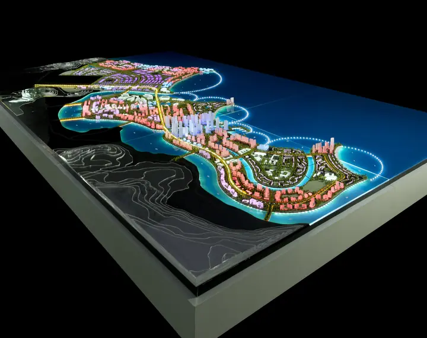
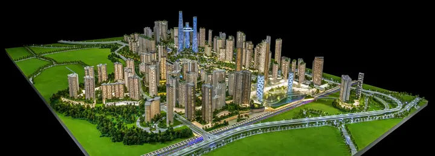
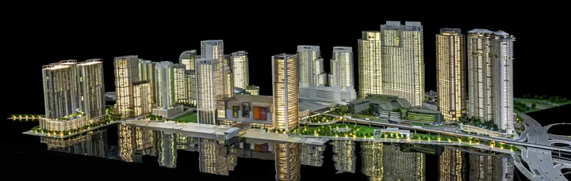
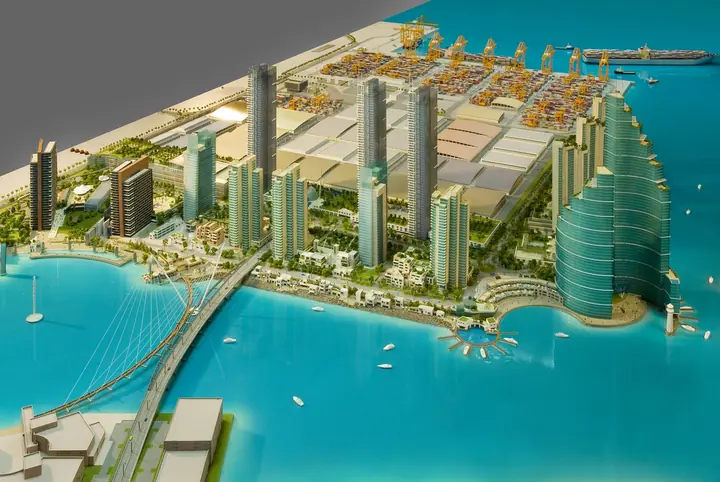
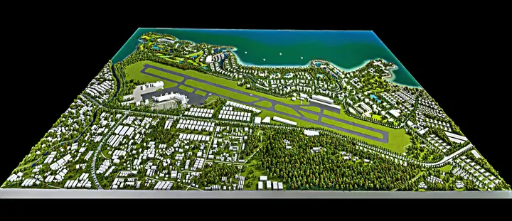
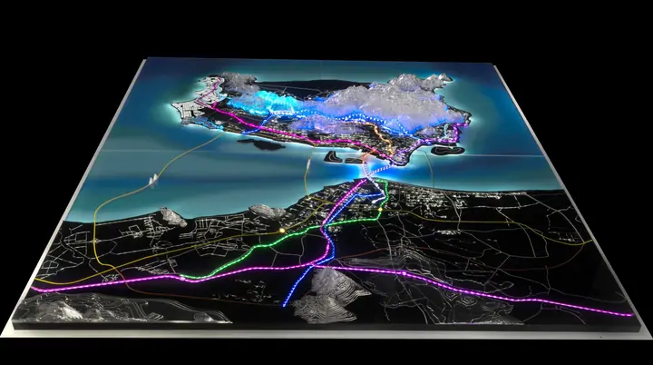
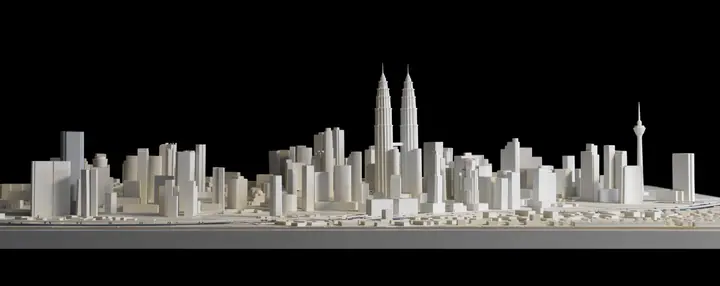
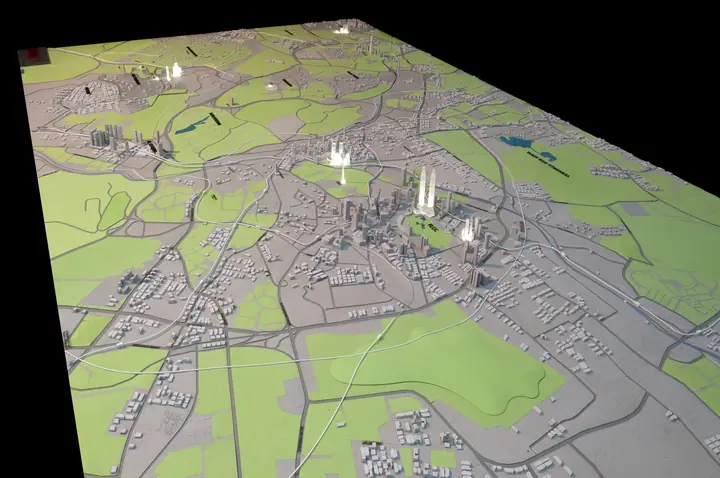

- Home
- Scale Models
- Master Planning Scale Models
City, Urban Development & Master Plan Scale Models
Large-format models of city districts, waterfronts, ports and islands, assembled on site when needed.

Scale master planning models make urban development projects easier to understand by showing buildings, infrastructure, transportation, public spaces, landscape and surrounding context in one physical representation.
TNBuilt West manufactures city and master planning models for developers, governments, planning teams, architects and infrastructure stakeholders.
- Modular construction
- Removable sections
- LED zoning
- Interactive elements
- Projection mapping
- Transportation
- On-site assembly
Technical specifications
| Technical Feature | TNBuilt West Specification |
|---|---|
| Standard Scales | 1:500, 1:1000, 1:1500, 1:2000 custom ratios |
| Manufacturing Materials & Equipment | Acrylic, polyurethane resin, Durable PVC sheets, brass, steel. SLA/SLS 3D printing, 5-axis CNC machining |
| Lighting Systems | Micro LED, programmable fiber optics, remote-controlled lighting zones |
| Assembly | Manual labor. Larger models are manufactured in separate parts to allow safe transportation. |
| Turnaround Time | Fast-track manufacturing from 6 to 10 weeks (according to size, design complexity, additional features) |
| Shipping & Delivery | Custom aluminum flight case packaging. Larger models are transported in multiple cases. 7 to 12 days worldwide transit |
Master Planning.

City District Masterplan

Waterfront City Masterplan

Tusdeer Port – Jeddah

Island City Masterplan with Airport

LED Interactive City Masterplan

City Public Transportation Model

Location Model of Empire Tower – The Intermark

3D City Map Model
Let's build yours.
Show the whole vision. Request a proposal for your masterplan model.